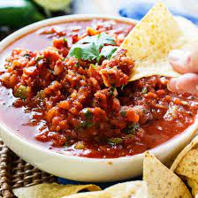

Fire Roasted Salsa

Description
Spicy, fresh and tasty fire-roasted salsa! Easy to make at home and a great addition to a movie night, potluck, or beach day.
As a lover of fresh salsa, I quickly got sick and tired of paying 6.99 for a small container at the grocery store, and I went on the hunt for the best and most flavourful recipe that I could come back to over and over again. This is it! This recipe has never let me down. It is flexible, easy to modify with whatever ingredients you have on hand, and way tastier than anything from the grocery store.
Ingredients
- 1/2 can of diced green chiles
- 4-6 cloves garlic
- 3/4 cup cilantro
- 1-2 jalapenos
- 2 tsp cumin
- 2 tsp chili powder
- 1 tsp salt, more to taste if needed
- 1/2 tsp black pepper, more to taste if needed
- 1 tsp dried oregano, or 1 tbsp fresh
- 2 tbsp lime juice
- 2 cans fire roasted tomatoes
- 1/2-1 bell pepper
- 1 small red onion
Steps
- In a food processor, blend first 12 ingredients to desired consistency
- Add tomatoes, bell peppers and red onion and pulse to desired consistency
- Refrigerate for at least 1 hour to let flavours combine
- Dive in! Enjoy with tortilla chips